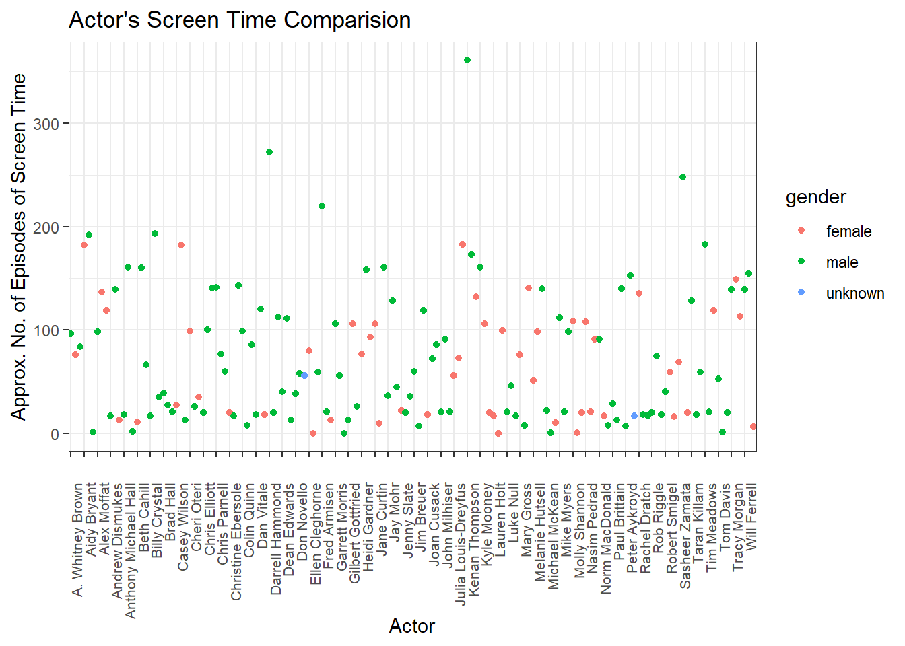

library(tidyverse)
library(ggplot2)
knitr::opts_chunk$set(echo = TRUE, warning=FALSE, message=FALSE)
setwd("D:/MyDocs/Class Slides/DACSS601/601_Spring_2023/posts/_data")
actors <- read.csv("snl_actors.csv")
casts <- read.csv("snl_casts.csv") %>%
select(-"first_epid", -"last_epid") %>%
mutate(screen_time = n_episodes * season_fraction)Join Tables and Analyzing Data
challenge_8
snl
Sahan Prasad Podduturi Reddy
Joining Data
Introduction
I was trying to analyze the snl_actors and snl_casts datasets in order to find out the approximate screen time for male and female SNL actors. We first start by importing the necessary libraries and setting the working directory to point to the location where the spreadsheet is located. Then we read in both the datasets into dataframes. From the snl_casts dataset, we approximate the screen_time for every actor by multiplying the number of episodes the actor appreared in with the season_fraction.
Join Data
Our actors dataframe has information about actor gender. We create join_one by combining both actors and casts dataframes with an inner join grouping by actor id - aid and summarizing to get total screen time per actor in terms of episodes. We know that actors has a separate row of information for every cast member and guest on snl, while casts contains rows of information for actors only. Performing inner join based on aid will match rows based on aid which guests do not have. Therefore, to perform a sanity check of our join results, we can print number of rows in casts and number of rows in join_one and they must be the same. Afterwards, we get join_two which contains a separate row for every different actor in join_one. Here, we are getting a separate row for every aid by summing the screen times for actors. Thus we can perform a sanity check once again by making sure the length of join_two is the same as the number of unique actors ids in join_one.
join_one <- casts %>%
inner_join(actors, by = "aid") %>%
select(-"update_anchor", -"n_episodes", -"url", -"season_fraction", -"featured", -"type")
head(casts) aid sid featured update_anchor n_episodes season_fraction
1 A. Whitney Brown 11 True False 8 0.4444444
2 A. Whitney Brown 12 True False 20 1.0000000
3 A. Whitney Brown 13 True False 13 1.0000000
4 A. Whitney Brown 14 True False 20 1.0000000
5 A. Whitney Brown 15 True False 20 1.0000000
6 A. Whitney Brown 16 True False 20 1.0000000
screen_time
1 3.555556
2 20.000000
3 13.000000
4 20.000000
5 20.000000
6 20.000000head(join_one) aid sid screen_time gender
1 A. Whitney Brown 11 3.555556 male
2 A. Whitney Brown 12 20.000000 male
3 A. Whitney Brown 13 13.000000 male
4 A. Whitney Brown 14 20.000000 male
5 A. Whitney Brown 15 20.000000 male
6 A. Whitney Brown 16 20.000000 maleprint(nrow(casts))[1] 614print(nrow(join_one))[1] 614join_two <- join_one %>% group_by(aid, gender) %>%
summarise(total_screen_time = sum(screen_time))
head(join_two)# A tibble: 6 × 3
# Groups: aid [6]
aid gender total_screen_time
<chr> <chr> <dbl>
1 A. Whitney Brown male 96.6
2 Abby Elliott female 76.2
3 Adam Sandler male 84.0
4 Aidy Bryant female 182
5 Al Franken male 192.
6 Alan Zweibel male 1.25print(length(unique(join_one$aid)))[1] 156print(nrow(join_two))[1] 156Visualization and Analysis
We can visualize the resulting dataframe comparing actor’s screen time and coloring them based on gender to give a good picture of average screen time for male and female snl stars.
join_two %>%
ggplot(aes(y=total_screen_time, x=aid, color=gender)) +
geom_point() +
theme_bw() +
theme(axis.text.x = element_text(angle = 90, hjust = 1, margin = margin(t = 0.5, unit = "cm"), size = 8)) +
scale_x_discrete(breaks = join_two$aid[seq(1, length(join_two$aid), by = 3)]) +
labs(title = "Actor's Screen Time Comparision", x = "Actor", y = "Approx. No. of Episodes of Screen Time")